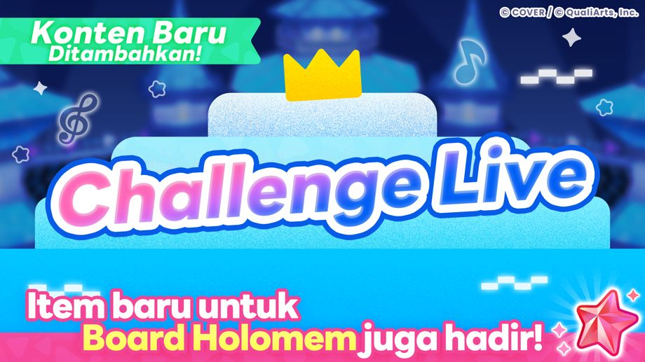
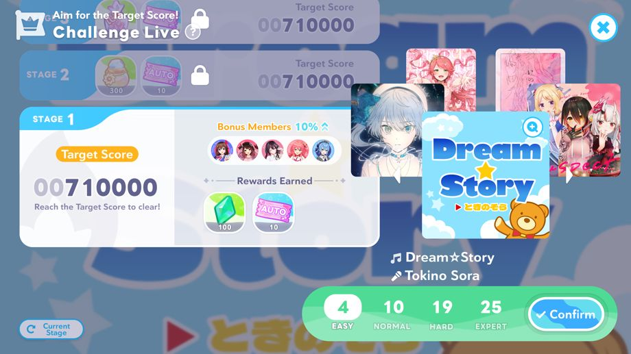

2026-11-25 11:00:00, Konten Baru "Challenge Live" Hadir!
◆Tanggal Rilis Challenge Live
2026-11-25 11:00:00~
◆Persyaratan Partisipasi
Selesaikan Misi Area "Misi Menuju Panggung Impian dimulai!"
*Area Quest "Misi Menuju Panggung Impian dimulai!" akan terbuka setelah menyelesaikan Main Quest Chapter 3 Episode 6 "Water Stage!".
Ringkasan Konten Baru "Challenge Live"

Challenge Live adalah mode untuk memainkan lagu tantangan di setiap stage dengan mencapai target skor.
Stage akan selesai setelah target skor tercapai dan pemain akan mendapatkan hadiah serta bisa lanjut ke stage berikutnya.
Bisa menyelesaikan hingga maksimal 100 Stage.
Jika bonus Member diatur pada setiap stage, efek bonus akan aktif dan Skor Unit akan meningkat.
Mengenai Hadiah

Selesaikan stage tertentu untuk mendapatkan item baru "Kubus Bintang Merah" dan Lencana Pencapaian.
*Lencana Pencapaian bisa didapatkan di bagian Achievs.
"Kubus Bintang Merah" dapat digunakan untuk membuka Node Board Holomem yang ditambahkan pada pembaruan Ver.1.3.0.
Untuk detailnya silakan cek "Pembaruan Board Holomem" di dalam "Pemberitahuan Pembaruan Ver.1.3.0".
Catatan Penting
・Konten dan periode event dapat berubah sewaktu-waktu.